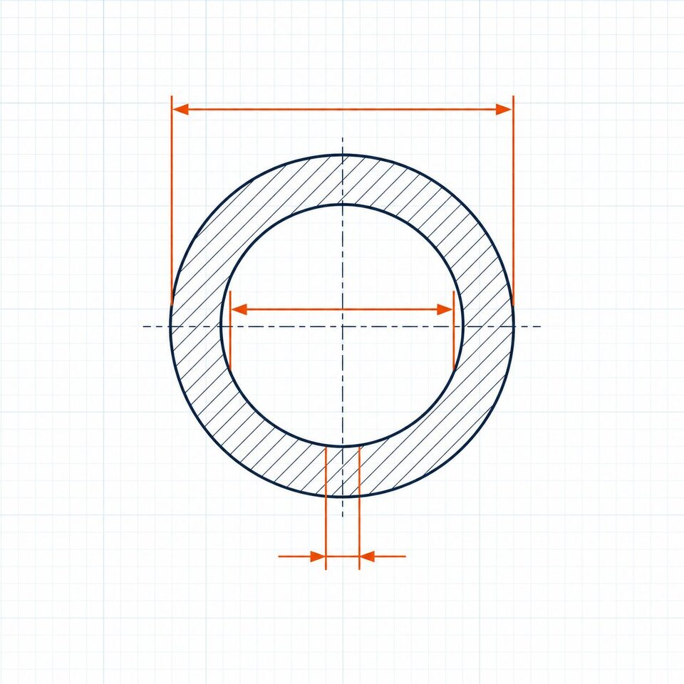

جایگاه استاندارد ابعادی
این استاندارد، ابعاد لولههای فولادی جوشی و بدون درز کربنی و آلیاژی را از سایز یکهشتم اینچ تا صد اینچ پوشش میدهد و مرجع اصلی هماهنگی بین لوله، اتصالات و فلنجهاست. بدون این استاندارد، مونتاژ اجزای خط از سازندگان مختلف غیرممکن بود.

سایز اسمی و قطر خارجی
رابطه سایز اسمی و قطر خارجی دو بخش دارد: در سایزهای نیم تا سه و نیم اینچ، قطر خارجی عددی متفاوت و غیررند است؛ در سایزهای چهارده اینچ به بالا، قطر خارجی دقیقاً برابر عدد سایز اسمی بر حسب اینچ میشود. این قاعده در محاسبه وزن، انتخاب اتصال و طراحی ساپورت اهمیت مستقیم دارد.
سریهای ضخامت دیواره
| سری | توضیح |
|---|---|
| ضخامتهای عددی | سری پنج، ده، بیست، سی، چهل، شصت، هشتاد، صد، صدوبیست، صدوچهل، صدوشصت |
| ضخامت استاندارد | معروف به استاندارد؛ در سایزهای تا ده اینچ برابر سری چهل |
| ضخامت زیاد | معروف به زیاد؛ در سایزهای تا هشت اینچ برابر سری هشتاد |
| ضخامت خیلی زیاد | معروف به دو ضربدر زیاد؛ ضخامت تاریخی برای سرویسهای سنگین |
برای جزئیات اعداد ضخامت در هر سایز، جدول اسچول را ببینید.
تلرانسهای ساخت
- ضخامت دیواره: در هیچ نقطهای نباید از هشتاد و هفت و نیم درصد ضخامت اسمی کمتر باشد.
- قطر خارجی: تلرانس مثبت و منفی محدود برای هر بازه سایز.
- بیضوی: محدودیت انحراف از دایره کامل، مهم برای مونتاژ جوشی.
- صافی و راستی: محدودیت خمیدگی برای شاخهها.
- طول: تلرانس طول شاخه متناسب با نوع سفارش.
نکات سفارشدهی
- سایز اسمی را همراه سری ضخامت یا ضخامت دقیق ذکر کنید.
- طول شاخه (تصادفی، دوبرابر تصادفی یا دقیق) را مشخص کنید.
- در صورت نیاز به ابعاد دقیقتر، تلرانسهای ویژه را در سفارش قید کنید.
- برای لوله استنلس، استاندارد ابعادی جداگانه و پسوند اس را در نظر بگیرید.
- گواهی مواد و نتایج تست را درخواست کنید.
قطر خارجی سایزهای رایج
| سایز اسمی | قطر خارجی (میلیمتر) | سایز اسمی | قطر خارجی (میلیمتر) |
|---|---|---|---|
| نیم اینچ | 21.3 | 4 اینچ | 114.3 |
| 3/4 اینچ | 26.7 | 6 اینچ | 168.3 |
| 1 اینچ | 33.4 | 8 اینچ | 219.1 |
| 2 اینچ | 60.3 | 10 اینچ | 273.0 |
| 3 اینچ | 88.9 | 12 اینچ | 323.8 |
از سایز چهارده اینچ به بالا، قطر خارجی برابر عدد سایز اسمی بر حسب اینچ است.
جمعبندی
استاندارد ابعادی، زبان مشترک لوله و اتصالات است؛ ذکر دقیق سایز، ضخامت و طول در استعلام، از ناهماهنگی در مونتاژ و دوبارهکاری در اجرا جلوگیری میکند.
سوالات رایج
چرا سایز اسمی با قطر خارجی فرق دارد؟
سایز اسمی یک نامگذاری تاریخی است و لزوماً برابر هیچ بعد فیزیکی نیست. در سایزهای کوچک و متوسط، قطر خارجی عددی متفاوت از سایز اسمی است؛ از سایز چهارده اینچ به بالا، قطر خارجی با سایز اسمی برابر میشود.
ضخامت دیواره چطور تعیین میشود؟
یا با انتخاب از سریهای استاندارد (مانند دو جدول و سه جدول) یا با ذکر ضخامت دقیق. در سفارشهای مهندسی، ذکر اسچول یا ضخامت دقیق الزامی است؛ عدد سایز به تنهایی کافی نیست.
تلرانس ضخامت دیواره چقدر است؟
در نقاط بحرانی، ضخامت نباید از هشتاد و هفت و نیم درصد ضخامت اسمی کمتر شود. این قاعده برای لوله و اتصالات، مبنای پذیرش بازرسی است.
آیا ابعاد لوله کربنی و استنلس یکسان است؟
قطرهای خارجی یکسان هستند اما سریهای ضخامت متفاوتاند؛ ابعاد لوله استنلس با استاندارد جداگانه و پسوند اس تعریف میشود و برخی ضخامتها در آن کمتر است.
مطالب مرتبط
- اسچول لوله — جدول ضخامت و وزن
- راهنمای ابعاد لوله طبق استاندارد ابعاد لوله استنلس
- راهنمای جامع لوله مانیسمان
- راهنمای ابعاد لوله — سایز اسمی، دیان و اسچول
- راهنمای اتصالات جوشی لببهلب
در استعلام، سایز اسمی، سری ضخامت یا ضخامت دقیق و طول شاخه را مشخص کنید تا لوله با ابعاد منطبق بر استاندارد و تلرانسهای مجاز عرضه شود.
مشاهده صفحه محصول ← ثبت RFQ همین محصولتامین این تجهیزات را به پیشرو تجهیز فرتاک بسپارید
شرکت پیشرو تجهیز فرتاک تامینکننده تخصصی تجهیزات صنعتی برای پروژههای نفت، گاز، پتروشیمی، فولاد و نیروگاهی است. برای دریافت پیشنهاد فنی و قیمت، استعلام (RFQ) خود را ثبت کنید تا کارشناسان مهندسی فروش در کوتاهترین زمان پاسخ دهند.
- تامین لوله صنعتیلوله کربنی، آلیاژی و استنلس با ابعاد استاندارد
- تامین تجهیزات پایپینگاتصالات و فلنج منطبق بر ابعاد لوله